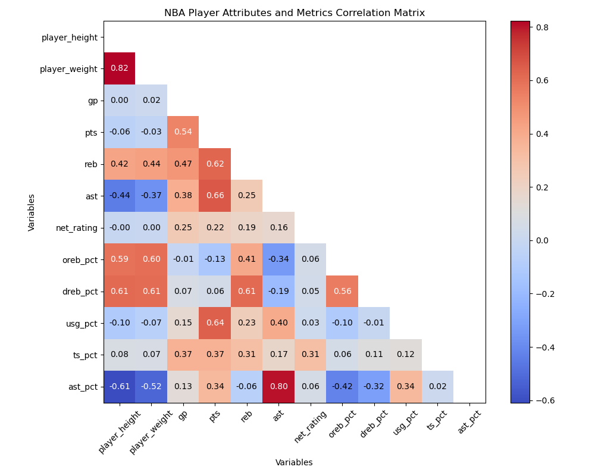

Influence of Physical Attributes on NBA Player Performance
Introduction
Our project delves into assessing the impact of physical attributes such as height, weight, and age
on NBA player performance. With the continuous evolution of basketball, the physical profile of the
ideal NBA player is ever-changing, influencing not just on-court strategies but also critical management
decisions such as scouting and team building. By meticulously examining a rich array of demographic,
biometric, and performance data, our analysis aims to unearth correlations between physical traits and
player success, thereby shaping future strategies in player development and team composition. These
insights will provide valuable perspectives for both basketball professionals and enthusiasts, guiding
their understanding and strategic approaches in the evolving landscape of the sport.
Data
Our study is underpinned by an extensive dataset containing detailed records of over 12,000 NBA players
from the 1996-2022 seasons. This dataset, updated most recently on October 13, 2023, to include the latest
season data, comprises 12,844 observations with 21 detailed attributes such as player height, weight, age,
points scored, rebounds, and assists. Sourced from Kaggle and meticulously supplemented with data from the
NBA Stats API and Basketball-Reference for missing entries, our dataset offers a profound basis for both
foundational and advanced statistical analysis. The comprehensive nature of this data not only allows for a
longitudinal analysis over the span of nearly three decades but also supports a nuanced exploration of how
physical attributes impact player performance and team dynamics across different basketball eras.
| Variable Name |
Descriptions |
| player_name |
Name of the player |
| team_abbreviation |
Abbreviation of the team name |
| age |
Age of the player |
| player_height |
Height of the player in centimeters |
| player_weight |
Weight of the player in kilograms |
| college |
College attended by the player |
| country |
Country of origin of the player |
| draft_year |
Year the player was drafted into the NBA |
| draft_round |
Round in which the player was drafted |
| draft_number |
Draft number of the player |
| gp |
Games played in the season |
| Variable Name |
Descriptions |
| pts |
Average points scored per game |
| reb |
Average rebounds per game |
| ast |
Average assists per game |
| net_rating |
Net rating of the player |
| oreb_pct |
Offensive rebound percentage |
| dreb_pct |
Defensive rebound percentage |
| usg_pct |
Usage percentage |
| ts_pct |
True shooting percentage |
| ast_pct |
Assist percentage |
| season |
NBA season |
Meanwhile, we believe that geographical information is important when exploring the physical attributes of NBA players.
Therefore, we make use of geographical information on the Natural Earth,
which is needed to make maps for the world.
To make a better data visualization, we create two different
layers for the average height and the average weight in each country.
Following is an interactive map for the all the countries in the world.
User can zoom in the map. The depth color for each layer indicates
the average height and weight for each country. When click any
country, the name and its average NBA players height and weight will be revealed.
In general, countries mainly send centers and big forwards tend to have higher
average height and weight like China for example. On the other hand, countries
mainly provide point guards and shooting guards tend to have lower average
height and weight than the others like United States for example. Lastly, countries
mainly give small forwards tend to have relatively high average height and low weight
like Russia and Germany.
Overview of Players' Heights And Weights
We primarily consider physical performance will be a scale
to select NBA players. For this reason,
we leverage bar plots with distribution of heights and weights by d3
to explore the exact influencing factors.
The first plot presents the distribution of heights over all NBA players,
which is negatively skewed due to some extreme shorter heights at the left side tail.
The straight lines in orange demostrated the average heights of NBA players,
which rounds about 201 cm. And the straight lines in purple is
the mean heights of US male adults, which is about 175cm.
Most of NBA players' heights are much more higher than the US male adults'
average height. It indicates that to be a NBA player, height is one of
the influence factors.
The second plot presents the distribution of weights over all NBA players,
which is practically symmetric and normal distribution. The straight lines
in orange demostrated the average weights of NBA players,which rounds about 100 kg.
And the straight lines in purple is the mean weights of US male adults,
which is about 91 kg. Most of NBA players' weights are heavier than
the US male adults' average weight. It indicates that weight is
also considered as one of the influence factors.
Further Research on Players' Heights and Weights
The purpose of line plot is to explore the relationship between NBA player heights
and weights by time. The correlation at each season is over 0.72, which means
there is a strong relationship between NBA player heights and weights. Since 2014,
correlation started decreasing to 12 percents. There is still a strong correlation
between them, but weaker than the period before 2014.
The points at each year is located by the average heights and weights for each season
from 1996 to 2022. Combined with previous plot, both of them present an decreasing trendency
since 2014. For this plot, highest and weights we can observe the curve of NBA player
heights and weights lines are similar before 2012. However, since 2012, the change of trendency
become converse. This is why correlation decreases 12 percents during this period.
Physical Attributes and Performance Metrics
Exploring the interplay between physical attributes and performance metrics in professional basketball,
our correlation matrix heatmap provides a data-driven perspective.
A robust positive correlation of 0.82 is evident between player height and weight,
reinforcing common expectations about player physique.
Delving deeper, the heatmap unveils a moderate positive correlation between player height and rebounding statistics,
underscoring the advantage taller players possess in securing rebounds. On the flip side,
the negative correlation between height and assists illuminates the inclination for shorter players
to engage more frequently in ball distribution and playmaking activities.
These statistical correlations shed light on the fundamental relationships
between a player's physical characteristics and their gameplay contributions.
For strategic team management, understanding these correlations is essential for
maximizing player utility and crafting winning strategies tailored to the physical strengths of the roster.

We aslo focus on the evolution of shooting efficiency, as depicted by the true shooting percentage,
with respect to player height, comparing two distinct basketball eras: before and after 2012.
True shooting percentage is a comprehensive measure, considering all forms of scoring attempts,
which provides an integrated assessment of shooting effectiveness.
The side-by-side boxplots distinctly categorize players into height ranges,
allowing for a direct comparison of shooting performance within specific physical profiles.
A notable upward trend in both the median and the interquartile range of true shooting percentages post-2012 is observed
across all height categories. This trend not only signifies an overall improvement in player shooting efficiency
but also reflects strategic adaptations within the sport that likely emphasize skill development
and shooting accuracy regardless of a player's stature.
These insights into the dynamics of player performance and game strategy can be pivotal for coaches and analysts
in adapting training regimens to align with the progressive demands of the sport.
This comparative visualization serves as a testament to the advancements in basketball techniques
and the increasingly pivotal role of precision in defining the modern game.
Physical Attributes and Performance Metrics Each Season
Now combining the metrics and distributions of height and weight each season,
We create the following interactive plot such that user can choose one of the
four lines to see the different correlations between specific physical attributes and
specific performance in each season.
Conclusion and Future Work
After the analysis, we have concluded there exist a transition
from big-ball era to small-ball era. The small-ball era is
characterized by shorter, more agile players, with a focus
on speed, flexibility, and perimeter shooting. the big-ball
era is characterized by taller, heavier players, with an
emphasis on strength, height advantage, and inside scoring.
For future work, it would be interesting to analyze player
skills in addition to physical attributes, and how they
contribute to success in different eras. This could include
aspects such as shooting accuracy, defensive skills, passing
ability, and more. Understanding these factors could provide
valuable insights into the evolution of the game and inform
strategies for player development and team composition.